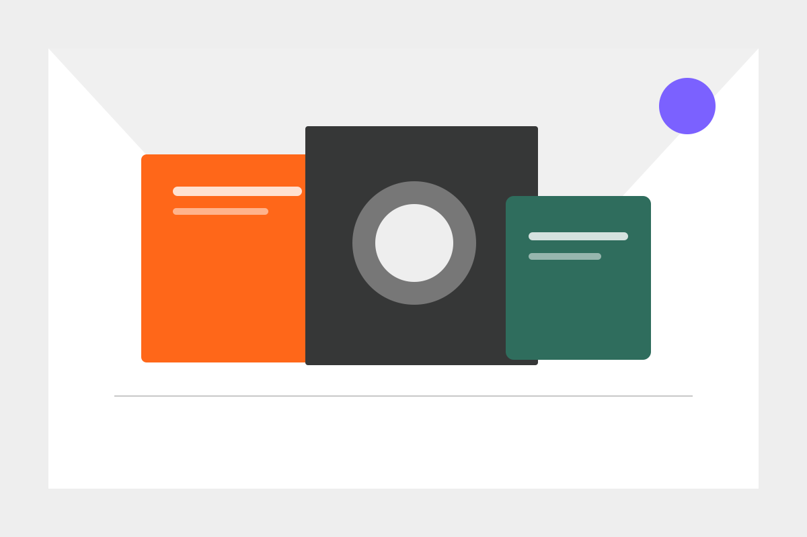
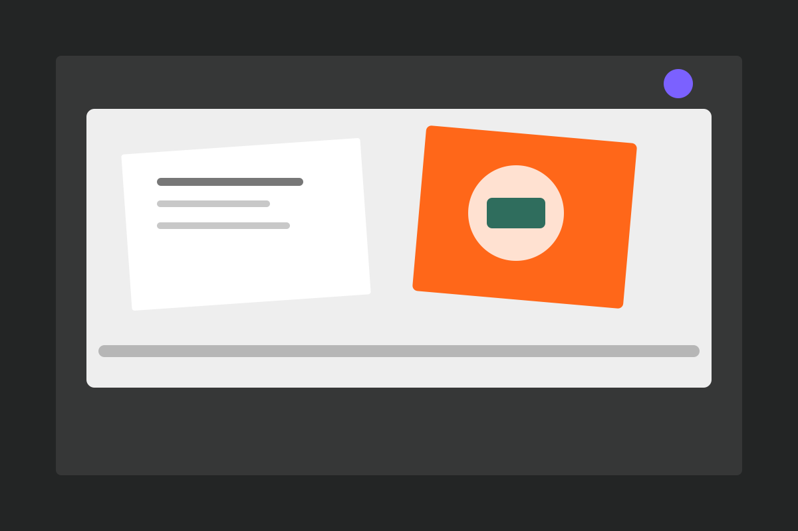

Quiet systems make room for strong ideas
A field note on rhythm, hierarchy, and why the smallest interface decisions often carry the most weight.

EXTRACTED SYSTEM / 2026.09.01
用真实组件、交互状态与响应式布局，检验一次公开页面采样得到的设计系统是否足以支撑一致实现。
白色文字在 #ff6719 上的对比度为 2.91:1。本页保留原始组合用于验真，不将其标记为 WCAG AA 通过。
01 / COLOR
02 / TYPOGRAPHY
20 / 24 · 70032 / 39.68 · 50024 / 30 · 500A careful sentence gives an idea enough room to become clear.
17 / 28 · 400Long-form reading uses a softer serif rhythm and a generous line height.
16 / 24 · 400Subscribe to receive new writing.
15 / 20 · 500Recent notes from people you follow.
15 / 21 · 400Recommended for you
15 / 20 · 600Compact system copy and metadata.
13 / 20 · 400FOLLOWING
13 / 20 · 60013 / 17 · 40012 publications
13 / 18.2 · 400Save for later
13 / 20 · 50003 / GEOMETRY
inset 1px4px / 6px1px / 1px04 / CONTROLS
05 / CONTENT PATTERNS
A field note on rhythm, hierarchy, and why the smallest interface decisions often carry the most weight.

The best operational interfaces reveal evidence, uncertainty, and next actions without turning the page into documentation.

A reading habit is also an editing habit: what we leave out shapes the attention we can give to what remains.
06 / STATES
这些状态未被原始单次采样完整观察；它们是本页为验证系统韧性而显式增加的测试扩展。
Items you save will appear here.
Your current view is still available.
07 / MOTION
250ms cubic-bezier(0.19, 1, 0.22, 1)
08 / COVERAGE
等待浏览器读取 tokens.css…
本页验证规范是否可被一致实现，不声称复原 Substack 私有组件源码、登录态、个性化内容或采样范围外的页面。